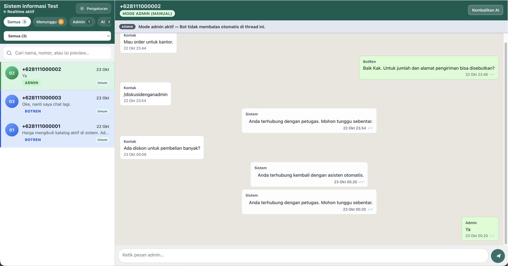

WhatsApp untuk bisnis yang lebih tertata
Pertanyaan yang sama dijawab otomatis. Yang butuh orang, ditangani staf.
Pelanggan tetap chat ke nomor WhatsApp bisnis Anda. Jam buka, alamat, dan harga keluar dari informasi yang sudah Anda siapkan.
Demo berjalan di browser dan tidak mengirim pesan ke WhatsApp sungguhan.
Staf tidak perlu mengetik jawaban yang sama setiap hari.
- Jam bukanya sampai jam berapa?
- Lokasinya di mana?
- Yang ini harganya berapa?
- Masih tersedia?
Satu nomor. Bot dulu, staf kalau perlu.
Pelanggan hanya melihat chat seperti biasa. Mereka tidak perlu tahu kapan bot berhenti dan staf yang membalas.
- 1 Pesan masuk ke nomor WhatsApp Business Anda.
- 2 Bot menjawab dari informasi yang sudah disiapkan.
- 3 Staf mengambil alih dari inbox bila pelanggan butuh orang.
- 4 Setelah selesai, chat dikembalikan ke bot.
Staf melihat semua chat di satu layar.

- Cari dari nama, nomor, atau isi chat Tidak perlu membuka percakapan satu per satu.
- Saat Anda membalas, bot diam di chat itu Kembalikan ke bot setelah urusannya selesai.
Tiga hal yang ikut dalam sistem yang sama
- Katalog produk Harga dan nama barang bisa dijawab dari daftar produk, bukan dari chat pribadi.
- Nomor bisnis tetap milik Anda Nomor itu juga bisa ditampilkan di Google Maps.
- Kontak dikelompokkan Misalnya per kota atau jenis pelanggan, supaya antrean tidak campur.
Coba alurnya di browser.
Kirim pesan seperti pelanggan, lalu balas seperti staf. Nomor WhatsApp Anda tidak perlu dihubungkan.
Kisaran biaya
Angka awal. Detailnya mengikuti kebutuhan bisnis Anda.
Setup
Setup bot, inbox, dan pengujian awal dengan pertanyaan yang paling sering diterima bisnis Anda.
Rp 3–8 juta
Maintenance
Perubahan FAQ atau menu, pemantauan ringan, dan perbaikan kecil.
Rp 500.000 / bulan
WhatsApp / Meta
Dibayar langsung oleh Anda ke Meta, mengikuti pemakaian nomor bisnis dan kebijakan yang berlaku.
Ke Meta
Hosting
Dibicarakan sesuai kebutuhan dan pengaturan implementasi.
Diskusi
Usaha yang ramai di WhatsApp
- Toko dan retail
- Restoran dan usaha kuliner
- Jasa dan layanan pelanggan
- Bisnis dengan katalog produk
Kalau ini mirip hari kerja Anda, coba demonya.
Kita bisa mulai dari pertanyaan yang paling sering masuk. WhatsApp Anda belum perlu dihubungkan.